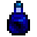

Tintenfisch Tinte
| Tintenfisch Tinte | |
|  | |
| Tintenfische nutzen diese Tinte, um mögliche Angreifer zu verwirren. | |
| Information | |
| Quelle | |
| Energie | Ungenießbar |
| Verkaufspreis | |
Tintenfisch Tinte ist ein Gegenstand, welcher von Tintenkindern in der Mine fallen gelassen wird und sowohl von Tintenfischen als auch von Mitternächtlichen Tintenfischen in Fischteichen produziert wird. Es wird als Zutat für die Färberei und für die Schneiderei benötigt.
Es kann nicht in der Abenteurergilde verkauft werden und muss verschickt werden, um die Sammlung der verschickten Gegenstände zu vollenden.
Als Geschenk
| Reaktionen der Dorfbewohner
| |
|---|---|
| Liebt es | |
| Neutral | |
Rezepte
| Bild | Name | Beschreibung | Zutaten | Energie / Gesundheit | Buff(s) | Buffdauer | Rezeptquelle | Verkaufspreis |
|---|---|---|---|---|---|---|---|---|
| Meerschaumpudding | Dieser Briny Pudding wird Sie wirklich in die maritime Denkweise bringen! | |||||||
| Tintenfisch-Tintenravioli | Schützt vorübergehend vor Schwächungen. | Tintenravioli Buff) |
Geschichte
- 1.4: Eingeführt.
- 1.5: Wird nun von Elliot geliebt, kann von Blauen Tintenfischen erhalten werden, Tintenfisch-Tintenravioli Rezept wird hinzugefügt.